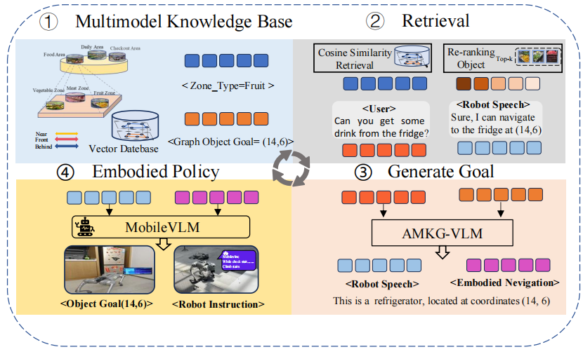
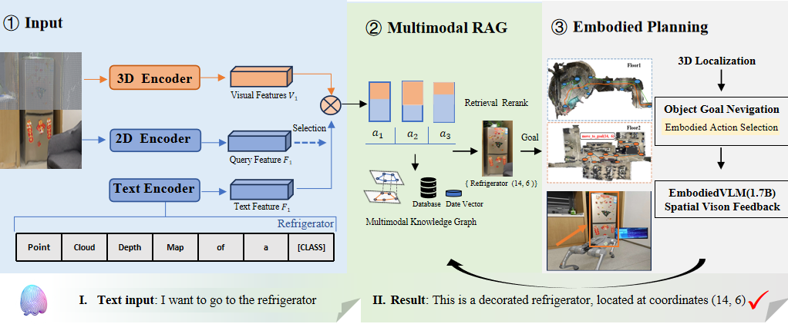
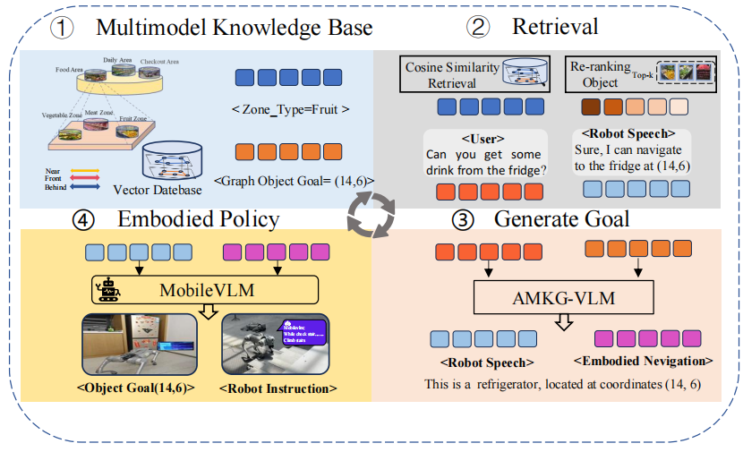
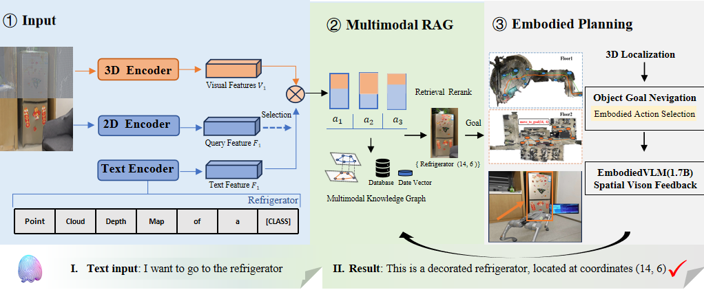
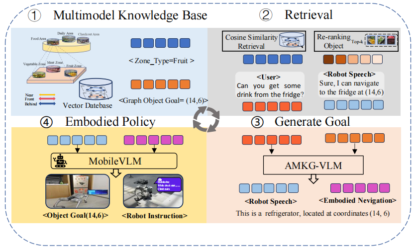
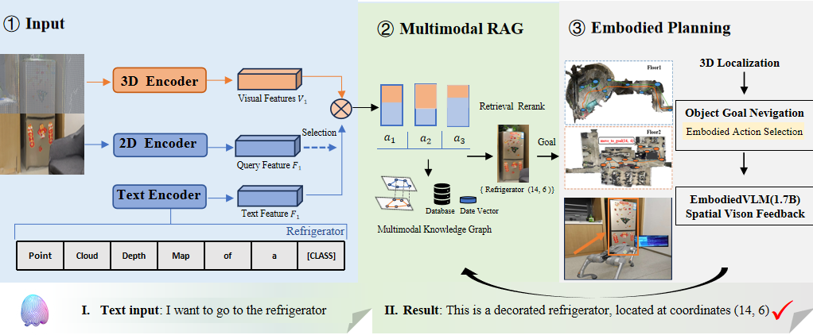

待修改
*Equal Contribution, ordered alphabetically | †Equal Advising
The Adaptive Multimodal Knowledge Graph Vision-Language Model (AMKG-VLM) is designed to tackle the complexities of robotic navigation in dynamic environments. By integrating the Adaptive Multimodal Knowledge Graph (AMKG) with the Mobile Vision-Language Model (MobileVLMv2), it enhances perception, understanding, and decision-making in unfamiliar settings. This enables comprehensive end-to-end intelligent robotic functionality.


待修改
@article{your2024paper,
title = {Your Paper Title},
author = {Author1, Author2, Author3, etc.},
journal = {Conference or Journal Name},
year = {2024},
}
待修改 We sincerely thank [Person 1] for [Contribution]. We also thank [Person 2] and [Person 3] for their help with [Task], as well as [Person 4] and [Person 5] for their valuable discussions.